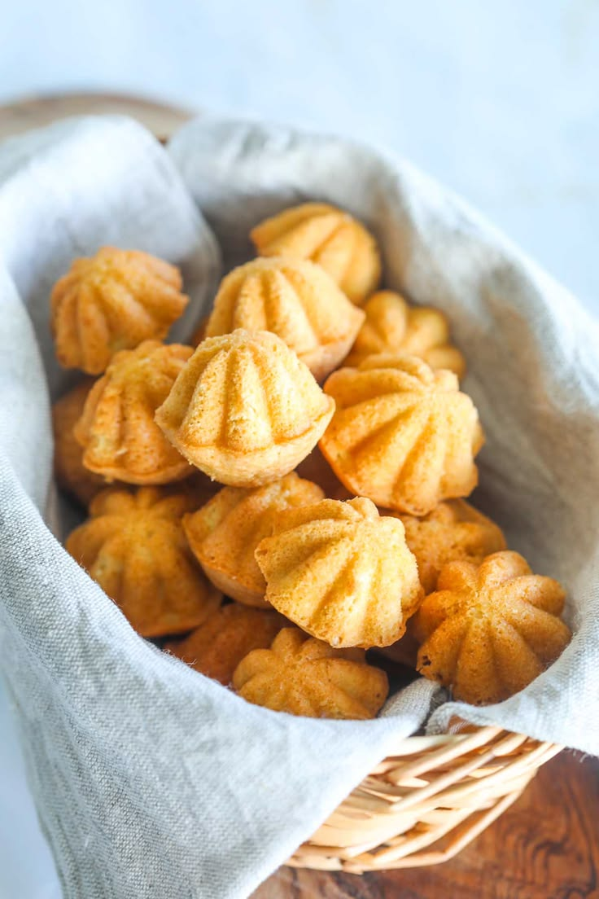

Description:
Kuih Bahulu is a classic Malaysian egg cake that’s light, sweet,
and full of that perfect eggy flavor. It’s a must-have during festive seasons!
If you’re looking for an easy recipe to try at home, this one’s perfect for home bakers.
Ingredients:
- Eggs
- Sugar - Granulated white sugar used in this recipe
- Vanilla extract
- All-purpose flour
- Baking powder
- Cooking oil (Either vegetable oil or canola oil are fine)
Steps:
- Preheat oven to 190°C and grease the kuih bahulu mould.
- Beat eggs until fluffy, then gradually add sugar until thick and sticky
- Add vanilla, gently fold in sifted flour and baking powder, then mix in oil and melted butter
- Pour batter into moulds, filling about 90% into each cavity
- Bake for approximately 15 minutes until it is golden brown
- Cool slightly, remove from moulds and transfer it to a wire rack. Dust with powdered sugar, if desired
Homepage
Return to the top